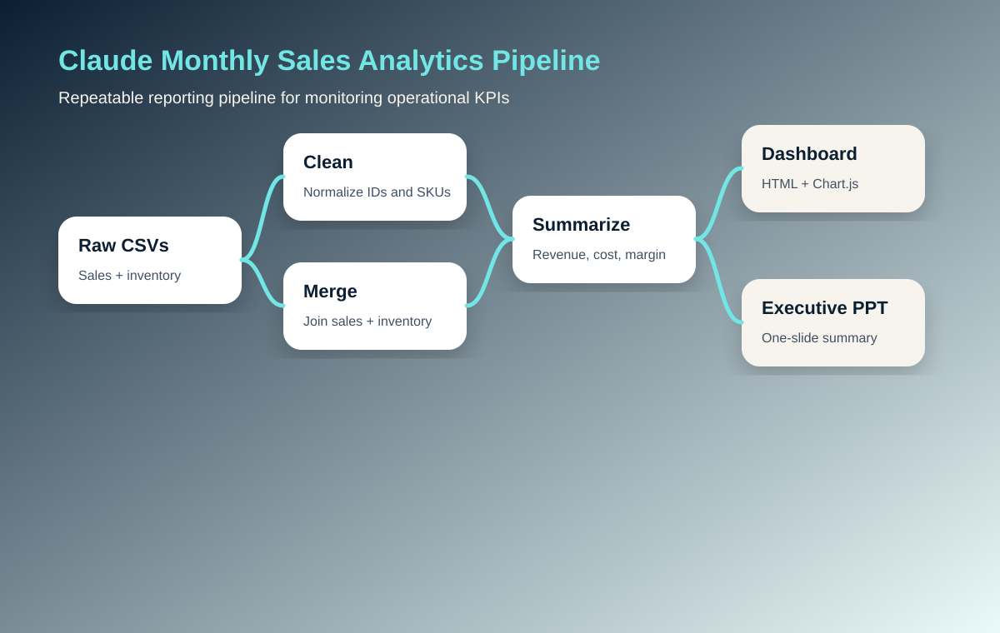
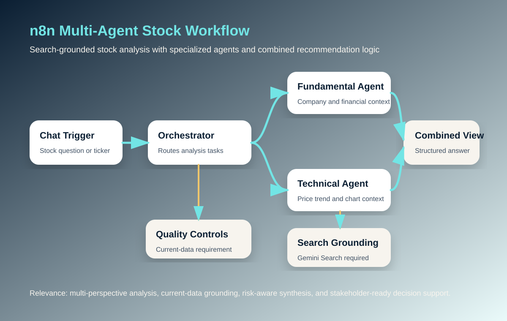
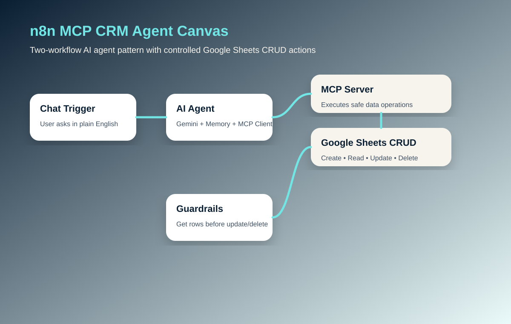
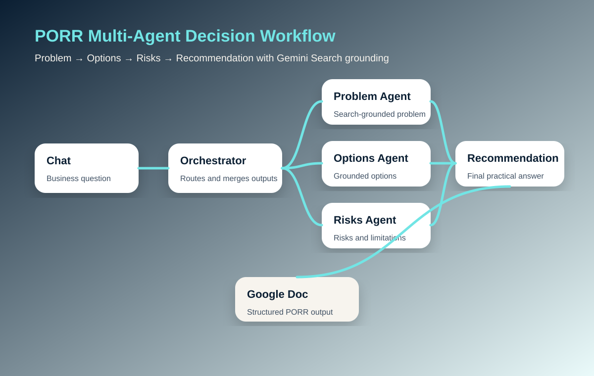

Conversation quality judgment
Experience writing system prompts, workflow guardrails, escalation instructions, and structured outputs for AI agents that interact with users and business data.
AI workflow automation • Customer implementation • Project-focused delivery
I’m Faaria Jessani, an AI Automation Consultant and PMP-certified implementation professional building hands-on AI workflows with Claude, n8n, Hermes, Gemini Search, Google Workspace, and reporting pipelines. This portfolio highlights projects relevant to customer implementation, AI project coordination, workflow documentation, stakeholder enablement, and operational reporting.
Target roles: Customer Implementation / Project Implementation for AI Projects
Experience writing system prompts, workflow guardrails, escalation instructions, and structured outputs for AI agents that interact with users and business data.
Project management and implementation background across stakeholder-heavy environments, with emphasis on SOPs, validation, documentation, adoption, and risk management.
Built repeatable data pipelines that clean, merge, summarize, and visualize monthly operating data into dashboards and executive summaries.
Designed workflows that include search grounding, confirmation before risky operations, unique identifiers for updates/deletes, and clear handoff rules for real business use.
Message match for implementation roles
Selected AI projects
These are based on the files and workflow documentation in your AI Agent Course, Claude cowork project, and AI automation engagement materials.
Developed a business-first AI workflow automation engagement focused on reducing manual admin work, mapping repetitive processes, selecting practical AI use cases, and supporting adoption through documentation and training.
Created a repeatable Claude-assisted pipeline that ingests monthly sales and inventory CSVs, cleans identifiers, merges datasets, validates row matching, summarizes KPIs, and produces a browser dashboard plus PowerPoint executive report.
Built a two-workflow n8n system: a user-facing AI Agent with memory and MCP Client, plus an MCP Server workflow that performs Google Sheets create, read, update, and delete actions.
Designed a multi-agent decision support workflow where an orchestrator routes a question through specialized Problem, Options, Risks, and Recommendation agents, each grounded by Gemini Search and merged into a Google Doc.
Built an orchestrated workflow that routes stock questions to Fundamental and Technical Analysis agents, requires both agents to use search, then combines results into a structured final view.
Completed and documented multiple foundational AI agent patterns: Gmail sending, Google Sheets operations, Google Docs management, Calendar actions, Gemini Search, Calculator, Date/Time, triggers, data transformation, and flow control.
Screenshots and workflow canvases
Available project visuals plus recreated workflow-canvas diagrams based on the n8n and Claude project files.





How I approach AI implementation
For customer or project implementation roles, I would evaluate AI projects through a practical readiness lens that blends workflow fit, stakeholder needs, adoption planning, documentation, reporting, and operational risk.
Does the AI workflow solve a real customer or internal operations problem with clear inputs, outputs, and ownership?
Are the business rules, data sources, edge cases, and success criteria documented before rollout?
Will users understand how to use the workflow, when to trust it, and what to do when it needs escalation?
Are human review points, exception paths, and ownership clear enough for day-to-day operations?
Are search grounding, confirmation steps, permissions, and update/delete safeguards built into the process?
Turn usage feedback into documentation updates, workflow refinements, dashboards, and operational recommendations.
Professional foundation
My strongest angle is not “AI hype.” It is translating business problems into clear workflows, implementation plans, documentation, and practical AI-supported systems that non-technical teams can actually adopt.
Contact Faaria
Send a short note. I’ll respond directly.